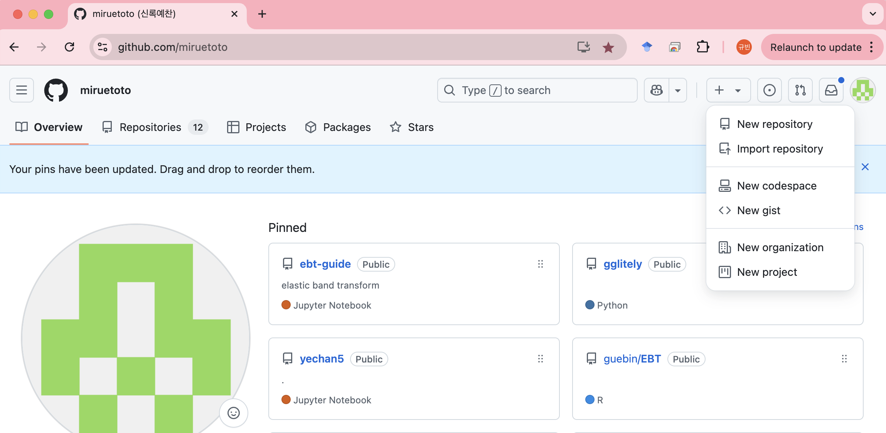
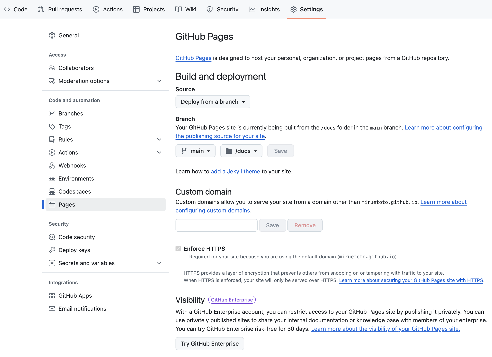

Day1: 터미널의 이해 - 학과서버셋팅
1 터미널의 이해
- 윈도우 컴퓨터에서 아래의 명령어가 뭘 의미하는지 살펴보자.
ls
mkdir asdf
cd asdf
cd..
rmdir asdf외우세요: 터미널을 열어준다 = 컴퓨터에 대한 제어권을 준다
터미널명령어 숙지의 중요성을 이해했으면 해서 만들었어요..
2 터미널에서 조작하기
- 복사하기 & 붙여넣기
- 복사하기: 드래그 + 우클릭
- 붙여넣기: 우클릭
- 자동완성: 탭!!
복붙하기 이거 작년에 많이 헤메시더라고요?? 익숙해져야합니당
3 파이썬 설치방법 조사
- 파이썬 배우는 초보자에게 가장 어려운것!
- 선생님마다 설치하는 방법이 모두 다름
- 왜 저렇게 설치방법이 다른가? 왜 다른 방법으로 각각 파이썬을 실행하는가? 이런것이 너무 어려움
- 심지어 실행하는것도 다름
- 방법1: 파이썬 프롬프트
- 방법2: .py를 이용하여 실행?
- 방법3: IDLE
- 방법4: 파이참
- 방법5: 스파이더
- 방법6: Visual Studio Code
- 방법7: 주피터노트북, 주피터랩
- 가상환경을 만들어서 해라..
- 아나콘다 네비게이터에 주피터가 있다..
- …
- 머리아프니까 colab을 쓰라는 사람도 있음. 아니면 도커이미지를 줄테니까 그걸 쓰라는 사람도 있음. AWS를 쓰라는 사람도 있음..
- 핵심: 그냥 (1) 컴퓨터에 (2) 파이썬을 깔아서 (3) 실행하는 것임
- 의문: 그런데 방법이 왜이렇게 많은가? 엑셀처럼 프로그램 설치하고 아이콘 더블클릭하면 끝나는 식으로 만들어야 하는것 아닌가?
4 python 실행하고 살펴보기
- 윈도우에서 anaconda prompt 실행 -> python
(base) C:\Users\python>pythonPython 3.9.7 (default, Sep 16 2021, 16:59:28) [MSC v.1916 64 bit (AMD64)] :: Anaconda, Inc. on win32
Type "help", "copyright", "credits" or "license" for more information.
>>> [1,2,3]+[4]
[1, 2, 3, 4]
>>> a=[1,2,3]+[4]
>>> a
[1, 2, 3, 4]- 2개를 실행할 수도 있음. (두 환경은 각각 서로 독립적인 파이썬, 변수가 공유되지 않음) \(\star\)
- 아쉬운점: `?list’와 같이 도움말 기능이 동작하지 않음
>>> ?list
File "<stdin>", line 1
?list
^
SyntaxError: invalid syntax
>>> 5 python 으로 코딩하기 (최악)
- 1부터 10까지 합을 구하는 프로그램을 만들고 싶음
- 시도1: python을 키고 아래와 같이 실행
(base) C:\Users\python>pythonPython 3.9.7 (default, Sep 16 2021, 16:59:28) [MSC v.1916 64 bit (AMD64)] :: Anaconda, Inc. on win32
Type "help", "copyright", "credits" or "license" for more information.
>>> total = 0
>>> for i in range(10):
... total=total+i
...
>>> total
45
>>>- 반성: 정답은 55인데 45가 출력되었다! \(\to\) range(10)을 range(1,11)으로 바꿔야겠다!
- 시도2: range(1,11)을 바꿔야겠다고 생각하고 다시 입력하다가 오타가 발생
>>> total =0
>>> for i in range(1,11):
... total = totla +i
...- 앗 totla이라고 잘못쳤다.
- 반성: 다음에는 정신을 똑바로 차려야겠다.
6 ipython 실행하고 살펴보기
- 윈도우에서 anaconda prompt 실행 -> ipython
(base) C:\Users\python>ipythonPython 3.9.7 (default, Sep 16 2021, 16:59:28) [MSC v.1916 64 bit (AMD64)]
Type 'copyright', 'credits' or 'license' for more information
IPython 7.29.0 -- An enhanced Interactive Python. Type '?' for help.
In [1]: a=[1,2,3]
In [2]: a
Out[2]: [1, 2, 3]
In [3]: a+[4]
Out[3]: [1, 2, 3, 4]- ?list가 가능
In [4]: ?list
Init signature: list(iterable=(), /)
Docstring:
Built-in mutable sequence.
If no argument is given, the constructor creates a new empty list.
The argument must be an iterable if specified.
Type: type
Subclasses: _HashedSeq, StackSummary, DeferredConfigList, SList, _ImmutableLineList, FormattedText, NodeList, _ExplodedList, Stack, _Accumulator, ...- 색깔이 알록달록해서 문법을 보기 편하다. (구문강조)
7 ipython 으로 코딩하기
- ipython을 사용한 프로그래머는 좀더 상황이 낫다
(base) C:\Users\python>ipythonPython 3.9.7 (default, Sep 16 2021, 16:59:28) [MSC v.1916 64 bit (AMD64)]
Type 'copyright', 'credits' or 'license' for more information
IPython 7.29.0 -- An enhanced Interactive Python. Type '?' for help.
In [1]: total = 0
In [2]: for i in range(1,11):
...: total = total + i
...:
In [3]: total
Out[3]: 558 메모장 + python
- 메모장을 키고 아래의 내용을 적는다.
total = 0
for i in range(1,11):
total = total + i
print(total)- 파일이름을 mysum.py로 저장한다.
- anaconda prompt에서 mysum.py파일이 저장된 폴더로 이동 -> 실행
(base) C:\Users\python>cd Desktop
(base) C:\Users\python\Desktop>dir
C 드라이브의 볼륨에는 이름이 없습니다.
볼륨 일련 번호: 9AFD-A05F
C:\Users\python\Desktop 디렉터리
2022-03-27 오전 11:32 <DIR> .
2022-03-27 오전 11:32 <DIR> ..
2022-03-27 오전 12:01 2,306 Chrome.lnk
2022-03-26 오후 08:32 2,332 Microsoft Edge.lnk
2022-03-27 오전 11:33 71 mysum.py
3개 파일 4,709 바이트
2개 디렉터리 743,643,467,776 바이트 남음
(base) C:\Users\python\Desktop>python mysum.py
55
(base) C:\Users\python\Desktop>- 소감
- 편한점1: 마우스를 이용하여 이동가능
- 편한점2: 내가 작업한 내용은 바탕화면의 메모장에 저장이 되어있음
- 아쉬운점: ipython의 장점은 활용못함 (구문강조, 도움말기능)
9 메모장 + ipython
- 전체적인 개발방식
- 메모장: 코드를 편집, 저장
- ipython: anaconda prompt처럼 메모장의 코드를 실행하고 결과를 확인 + 구문강조, 도움말확인기능 등을 이용하여 짧은 코드를 빠르게 작성
- 기능
- ipython에서 !python mysum.py를 입력하면 anaconda prompt에서 python mysum.py를 입력한 것과 같은 효과
- ipython에서 %run mysum을 입력하면 메모장에서 mysum.py에 입력된 내용을 복사해서 ipython에 붙여넣어 실행한것과 같은 효과
!는 터미널 명령을 훔쳐쓰는 기능.%는 ipython 에서 제공하는 마법같은 기능. 이 두개를 잘 쓰면 ipynb에서 작업하기 매우 편리함.
10 Jupyterlab
- 메모장과 ipython을 하나로 통합한 프로그램이 등장!
- jupyter notebook, jupyter lab
- spyder
- idle
- VScode
- …
- 주피터노트북, 혹은 주피터랩을 켜보자.
(base) C:\Users\python>jupyter lab - 셀에서 1+1 수행
- 셀에서
!dir등의 명령어 실행
- 주피터의 트릭 (실제로 주피터는 ipython에 기생할 뿐 아무런 역할도 안해요)
- 주피터를 실행
- 새 노트북을 생성
- 컴퓨터는 내부적으로 ipython을 실행하고 그 ipython이랑 여러분이 방금만든 그 노트북과 연결
- 처음보이는 cell에 1+1을 입력 -> 쉬프트엔터 -> 결과2가 출력
- 처음보이는 cell하나 = 자동으로 열린 하나의 메모장
- cell 1+1을 입력 = 메모장에 1+1을 적음
- 쉬프트+엔터후 결과2를 출력 = cell의 내용을 복사 -> ipython에 붙여넣음 -> ipython 계산된 결과를 복사 -> cell로 돌아와 붙여넣기
- 새로운 cell을 추가하고 2+2을 입력 -> 쉬프트엔터 -> 결과4가 출력
- 새로운 cell을 추가 = 새로운 메모장 추가
- cell 2+2을 입력 = 새로운 메모장에 2+2를 적음
- 쉬프트+엔터후 결과4를 출력 = cell의 내용을 복사 -> ipython에 붙여넣음 -> ipython 계산된 결과를 복사 -> cell로 돌아와 붙여넣기
- 중요한 사실들
- IDE는 내부적으로 연산을 수행하는 능력이 없다. (생각해볼것: 왜 R을 꼭 설치하고 Rstudio를 설치해야 했을까?)
- 주피터에서 커널을 재시작한다는 의미는 메모장이 열린채로 ipython을 껐다가 다시 실행한다는 의미
- 주피터는 단순히 ’메모장의 내용을 복사하여 붙여넣는 기계’라고 볼 수 있다. 이렇게 생각하면 주피터는 꼭 ipython에 연결할 이유는 없다. 실제로 주피터에 R을 연결해서 쓸 수 있다. 즉 하나의 IDE가 여러개의 언어와 연결될 수 있다.
- Jupyterlab이라는 프로그램은 크롬에 있는 내용과 ipython간의 통신을 제어하는 프로그램일 뿐이다.
Language, Kernel, IDE 의 차이점을 이해하는게 중요함
11 원격/클라우드 컴퓨터
- 지금까지는 ipython이 실행되는 컴퓨터와 크롬이 실행되는 컴퓨터가 동일하다는 전제였음.
- 생각해보니까 어차피 ipython이 실행된 컴퓨터에서 내가 크롬에 입력한 명령 “전달”되기만 하면 되므로 꼭 같은 컴퓨터일 필요는 없다.
11.1 모델1 – 원격컴퓨터 (일대일)
- 준비상태
- 학과서버: ipython을 실행 + 이 컴퓨터는 인터넷 연결이 되어있어야함
- 규빈노트북: 크롬실행 + 이 컴퓨터도 인터넷이 연결되어 있어야함
- 명령입력
- 규빈노트북의 크롬에서 1+1을 입력하고 쉬프트 엔터를 누름
- 규빈노트북 -> 학과서버
- 규빈노트북의 내부의 어떤프로그램은 1+1이라는 명령을 복사하여 카카오톡으로 학과서버에 전달
- 학과서버 내부의 어떤프로그램은 1+1이라는 명령을 카톡으로 받아서 그것을 ipython에게 전달
- 학과서버 -> 규빈노트북
- 학과서버 내부의 ipython은 2라는 출력결과를 계산함
- 학과서버 내부의 어떤프로그램은 계산결과를 카톡으로 규빈노트북에 알려줌
- 규빈은 본인 노트북에서 편하게 계산결과를 받아볼 수 있다.
11.2 모델2 – 원격컴퓨터 (일대다)
- 개념: 2개 이상의 ipython 커널을 각각 다른 메모장에 연결가능.
- 확장개념:
- 2개 ipython 커널을 생성. 편의상 각각을 커널A,커널B라고 하자.
- 커널A는 규빈노트북의 메모장에 커널B는 영미노트북의 메모장에 연결한다.
- 영미와 규빈은 각각 독립적으로 작업가능
- 의문?
- 규빈은 python==3.10 을 쓰고 싶고 영미는 python==3.12 를 쓰고 싶다면??
- 학과서버에 python==3.10 과 python==3.12 가 동시에 깔려야함.
- 원래는 불가능하지만 “가상환경” 이라는 개념을 도입하면 가능하다. \(\to\) 아나콘다의 등장
11.3 모델3 – 클라우드 컴퓨터 (google colab)
- 구글코랩
- 구글에 여러가지 성능을 가진 컴퓨터가 \(n\)대 있음. 이 컴퓨터들을 연결하여 하나의 거대한 컴퓨터처럼 동작하게 만듦.
- 이 컴퓨터는 학과서버처럼 동작함. 즉 여러명에게 컴퓨팅 자원을 분배함.
- 구글코랩과 비슷한 방식으로 코드스페이스가 있음.
12 원격제어 (맥북)
- ssh를 이용한 접속
- 질문: 여기서 파이썬을 키면? 어떤 컴퓨터 spec으로 계산될까?
- 한계점: ssh는 동일네트워크내에서만 동작한다. (진짜?)
13 local / remote
- local: 물리적으로 가까이 있음 + 네트워크 없이 접근
- 강의실에 있는 윈도우 컴퓨터
- 여러분이 가지고 있는 노트북
- remote: 물리적으로 멀리 있음 + 네트워크를 통해 접근
- 제서버1 (210.???.???.???)
- 제서버2 (210.???.???.???)
- 학과서버 (210.???.???.???)
- 구글코랩
- codespace
- github, google drive
- 구분이 딱 떨어지는건 아님.. 그냥 아래의 정도로 이해하면 좋음
- local = 가까이
- remote = 멀리
14 코드스페이스 켜보기
우리의 두 번째 리눅스 서버 얻기 (첫 서버는 코랩아닐까요?)
- 단계1: 실습실컴퓨터로 깃헙에 로그인
- 깃헙이란? 그냥 구글드라이브 같이 파일을 저장하는 기능을 한다고 이해하자.. (틀린 설명입니다!)
- 단계2: New repository 를 이용하여 새로운 저장소를 만들자. 저장소 이름은 아무거나..
- 저장소란?? 말그대로 파일,폴더들을 저장할 수 있는 것
- 쉽게 생각하면 그냥 “큰” 폴더임.
- 윈도우로 치면
downloada,desktop, 이런폴더들..

- 단계3: 만들어진 저장소를 기반으로 codespace 생성
- local = 실습실컴퓨터
- remote = codespace
- 단계4: codespace에서 아래의 명렁어들을 순서대로 실행하고 무엇을 의미하는지 공부하자.
ls
ls -a
ls .
ls ..
ls sample
mkdir asdf
wget https://raw.githubusercontent.com/guebin/DV2023/main/posts/titanic.csv
cp titanic.csv ./asdf
ls ./asdf
rm titanic.csv
rm -rf asdf 명령어들을 linux_commands.txt에 저장하자.
- 단계5: 개인노트북으로 깃헙로그인
- local = 개인노트북
- remote = codespace
- 단계6: 다시 코드스페이스에 접근하여 study_list.ipynb 주피터노트북을 만들자. 리스트만드는 방법을 공부하자.
lst = [1,2,3] - 단계7: study_dict.py파일을 만들자. dict만드는 방법을 공부하자.
# 방법1
dct1 = {'a':1, 'b':2, 'c':3}
# 방법2
dct2 = dict(a=1,b=2,c=3)# 퀴즈1: 다시 코드스페이스에 접근하여 test.ipynb 주피터노트북을 만들고 아래 경로에 존재하는 파일을 다운로드하라.
https://raw.githubusercontent.com/guebin/DV2023/main/posts/titanic.csv현재폴더에서 asdf폴더를 만들고 다운로드한 파일을 asdf 폴더로 옮겨라.
(풀이1)
!wget ~
!mkdir ~
!cp ~
!rm ~(풀이2)
!wget ~
!mkdir ~
!mv ~(풀이3) – 사실 이거는 “asdf 폴더를 만들고 그안에 다운로드하는 방식”이라 문제에서 요구하는 동작이랑 좀 다르긴해요 (결과는 똑같지만)
!mkdir ~
!wget ~ #
15 코드스페이스 \(\rightarrow\) 깃헙 \(\rightarrow\) 코랩
- 코드스페이스에서 공부한 내용을 코랩에서 이어서 하고싶다.
- 단계1: 코드스페이스에 접근
- local = 개인노트북
- remote = codespace
- 단계2: 코드스페이스 \(\to\) 깃헙 레포지토리
- local = codespace
- remote = github
- 단계3: 코랩 \(\leftarrow\) 깃헙 레포지토리
- local = colab
- remote = github
!wget ~~~~~코랩에서 공부한 내용을 나중에 codespace에서 이어하려면 “코랩 \(\to\) 깃헙” 의 과정이 가능해야함. 이건 다루지 않음.
local/remote 의 개념을 이해
16 블로그카피 (Fork)
- 깃헙과 구글드라이브의 첫번째 차이: 깃헙은 기본적으로 “공개” 되어 있음.
- !!! 생각해보니까 이 강의노트도 깃헙으로 만들지 않았을까??
- 강의노트의 내용들은 깃헙 (=공개된 구글드라이브) 어딘가에 저장되어있을거야
- 그걸 찾아내면? 강의노트를 힘들게 따라칠 필요가 없었잖아?
- 여기있어요: https://github.com/guebin/DSTBX2025
- 이 저장소를 포크로 콕 찍어서 내 저장소로 가져올 수 있을까? (마치 좋아하는 음식을 가져오는 것처럼)
17 코드스페이스에 quarto 설치
- 포크한 저장소를 기반으로 새로운 코드스페이스 생성
- quarto 다운로드: https://quarto.org/docs/download/
- 아래를 실행 (하면 안될걸?)
dpkg -i quarto-1.6.39-linux-amd64.deb {kind=link}
- quarto-1.6.39-linux-amd64.deb 삭제
18 깃헙추가기능1: 블로그 업로드
- 깃헙과 구글드라이브의 두번째 차이: 깃헙은 단순한 저장소를 넘어 추가기능이 있음. 구체적으로 GitHub 레포지토리는 블로그 게시물을 자동으로 발행(publish)할 수 있는 기능을 지원함.
- 코드스페이스에 quarto 설치 에서 명령어 수정하고, 그림삽입하여 업로드하자.
quarto render
git add .
git commit -m .
git push- 깃헙에서 아래를 설정 – /docs 옆에 Save를 눌러야함

- 꾸미기: 아래를 수정하자..
_quarto.yml수정author: "최규빈"수정index.qmd수정
깃헙에 대한 좀 더 깊은 이해 (저장소의 의미, 구글드라이버와 차이점) 를 위해서 구성한 강의노트
19 리눅스명령어 – hw
- 숙제: hw1.txt 파일 열어서 풀어보세요
- 공부한것을 바탕으로 포스트작성.
---
title: "hw1 -- 여러가지 리눅스 명령어"
author: "최규빈"
date: "12/26/2024"
---20 .sh
- 블로그에 업로드할때마다..
quarto render
git add .
git commit -m .
git push 하는것 귀찮죠?
- 자동화하는 방법.
publish.sh파일을 만든다.quarto render,git add .,git commit -m .,git push를 순서대로 친다.- 저장한다.
- 터미널에서
bash push.sh실행
21 vi 벼락치기
- 이건 꼭 알아야함
vi를 이용하여 파일만들기- 편집모드 \(\leftrightarrow\) 명령모드:
i/a\(\leftrightarrow\)esc vi를 이용하여 파일수정하기vi에서 편집후 저장 후 종료, 그냥 종료, 강제종료- 찾기:
/asdf\(\to\) 엔터 \(\to\)n/shift+n
- 이걸 알면 편리함 (은근히 손에 착착 붙음)
dd: 줄삭제
여기까지는 리눅스에 대한 이해를 돕기 위해서 만들었습니다.
22 잔소리
- 솔직히 리눅스 배우기 귀찮죠?
- 리눅스 못하는 사람이 데이터분석하면 어떤 느낌이냐면.. 핸드폰으로 엑셀시트 정리하는 느낌??
# 예제1 – 코랩에서 해보세요
아래의 경로에서 데이터를 다운받아 df 로 저장하라.
#
# 예제2 – 아래의 코드를 실행하여 ucf101 dataset을 다운로드하라.
file_path = huggingface_hub.hf_hub_download(
repo_id="sayakpaul/ucf101-subset",
filename="UCF101_subset.tar.gz",
repo_type="dataset"
)아래를 코드를 변형하여 압축해제하라.
tar -xvf UCF101_subset.tar.gz데이터를 살펴보라.
#
23 깃헙추가기능2: 패키지 배포
- 깃헙과 구글드라이브의 두번째 차이: 깃헙은 단순한 저장소를 넘어 추가기능이 있음. 예를 들어, GitHub 레포지토리는 소프트웨어 패키지를 배포하는 데 활용될 수 있음.
아래의 내용은 가급적 터미널로 해보세요
1 저장소만들기
- 저장소이름은
asdf로 하자. (대충 만들겠다는 의미)
2 저장소에서 대충 아래와 같은 구조로 파일 및 디렉터리를 만든다.
asdf/ # GitHub 저장소 이름
│
├── pkg1226/ # Python에서 import할 때 사용하는 이름
│ └── __init__.py # 반드시 이 이름으로 작성해야 함
│
├── README.md # 선택 사항 (없어도 무방)
├── setup.py # 패키지 설치 및 배포를 정의하는 파일로 반드시 이 이름이어야 함– __init__.py 파일내용
asdf/mymodule/__init__.py
def hello_world():
return "Hello from pkg1226!"– setup.py 파일내용
asdf/setup.py
from setuptools import setup, find_packages
setup(
name="mypkg", # pip install 할 때 사용되는이름
version="0.1.0",
packages=find_packages(),
)3. 반영사항을 저장소로 push 한다.
git add .
git commit -m .
git push 4. 코랩 등 다른 환경으로 가서 방금 만든 패키지를 설치한다.
pip install git+https://github.com/miruetoto/asdf.git5. 테스트한다.
import pkg1226
pkg1226.hello_world()패키지배포 경험해보고.. 리눅스 명령어로만 파일, 폴더를 구성하면서 리눅스 명령어에 익숙해졌으면 해서 구성한 강의노트입니다.
24 ssh 우회하기
24.1 내부와이파이
- 182 접속해보기
ssh toolbox@210.117.173.182
# 비밀번호는 jbnu- 183 접속해보기
ssh guebin@210.117.173.183
# 비밀번호는 jbnu24.2 외부와이파이
- 182 접속해보기
ssh toolbox@210.117.173.182
# 비밀번호는 jbnu- 183 접속해보기
ssh guebin@210.117.173.183
# 비밀번호는 jbnu24.3 182 - 포트변경
- 포트변경 – 실습X
포트가뭐야?
- 네트워크로 데이터가 드나드는 문
- 네트워크로 데이터를 옮겨야 하는 경우 무조건 port를 이용해야한다.
- 프로그램마다 암묵적으로 애용하는 포트가 있음!!
아래는 well-known port 임
| 프로그램 | 포트 번호 | 설명 |
|---|---|---|
| SSH | 22 | 원격 접속 및 파일 전송 (보안) |
| SMTP | 25 | 이메일 전송 |
| DNS | 53 | 도메인 이름 해석 |
| HTTP | 80 | 웹사이트 전송 |
| POP3 | 110 | 이메일 수신 |
| IMAP | 143 | 이메일 수신 (POP3보다 발전된 방식) |
| HTTPS | 443 | 보안 웹사이트 전송 |
| MySQL | 3306 | 데이터베이스 |
| 리그 오브 레전드 | 5223 | PVP.net 클라이언트 |
| 리그 오브 레전드 | 2099, 5222 | 게임 데이터 전송 |
| 스타크래프트 | 6112 | 배틀넷 및 게임 데이터 전송 |
| 마인크래프트 | 25565 | 서버 호스팅 및 클라이언트 통신 |
| Zoom | 8801-8802 | 화상 회의 |
| Jupyter | 8888 | 데이터 분석 |
| RStudio | 8787 | 데이터 분석 |
vi /etc/ssh/sshd_config...
Port 1226
...service ssh restart- 내부와이파이에서 182접속하기
ssh toolbox@210.117.173.182 -p 1226
# 비밀번호는 jbnu- 외부와이파이에서 182접속하기
ssh toolbox@210.117.173.182 -p 1226
# 비밀번호는 jbnu- 내부와이파이에서 183접속하기
ssh guebin@210.117.173.183
# 비밀번호는 jbnu- 외부와이파이에서 183접속하기 (??)
25 183 서버셋팅
25.1 ssh 연결
- 183번 컴퓨터에 접속하기
ssh guebin@210.117.173.183 25.2 password 변경
- 아래를 실행하여 비밀번호를 바꿀 것
passwd- 이후 ssh로 접속할때 바뀐 pw를 입력한다.
ssh guebin@210.117.173.18325.3 아나콘다 설치
- https://www.anaconda.com/download
- 아나콘다를 다운받을 수 있는 주소 get // Linux 64-Bit (x86) Installer
wget으로 다운로드bash로 실행- 동의할 내용 동의하고 설치 (글을 넘길때는 space이용)
- 설치다하면 exit 하고 재접속.. 맨앞에 (base) 가 보이면 올바르게 설치된것임
25.4 주피터랩 설치 및 실행
- 가상환경 셋팅
conda create -n first # 가상환경생성
conda activate first # 가상환경 활성화
conda install -c conda-forge notebook # 주피터랩설치- 접속하는 방법1: 토큰으로 접속
jupyter lab --ip "0.0.0.0" --port {8,학번끝3자리}이후에
http://127.0.0.1:8052/lab?token=????
와 같은 주소 형식을
http://210.117.173.183:8052/lab?token=????
와 같이 바꾸고 들어오세요
- 접속하는 방법2: password로 접속
jupyter notebook password를 이용하여 passwd를 설정한 뒤 다시 아래를 실행
jupyter lab --ip "0.0.0.0" --port {8,학번끝3자리}학과서버셋팅 연습을 위한 내용
26 학과서버셋팅 (\(\star\star\star\)) – hw
26.1 ssh 연결
- 186 컴퓨터에 접속하기
ssh root@210.117.173.186 -p {학번끝5자리}26.2 password 변경
- 아래를 실행하여 비밀번호를 바꿀 것
passwd root- 이후 ssh로 접속할때 바뀐 pw를 입력한다.
ssh root@210.117.173.186 -p {학번끝5자리}26.3 아나콘다 설치
26.4 주피터랩 설치 및 실행
- 가상환경 셋팅
conda create -n first # 가상환경생성
conda activate first # 가상환경 활성화
conda install -c conda-forge notebook # 주피터랩설치- password 설정
jupyter notebook password- 실행
jupyter lab --ip="0.0.0.0" --port={MY-PORT} --no-browser --allow-rootport는 자신의 학번을 기준으로, 십의자리와 만의자리를 바꾸며 사용할 수 있음. 예를들어 학번끝 5자리가 43052라면
만의자리변경
- 23052
- 33052
- 53052
십의자리변경
- 43002
- 43012
- 43022
- 43032
- 43042
- 43062
- 43072
- 43082
- 43092
에 해당하는 port번호를 쓸 수 있음.
사실 이 부분이 가장 실용적인 내용입니다. 이해할 것은 없지만..